11. River Transport Model (RTM)¶
The RTM was developed to route total runoff from the land surface model to either the active ocean or marginal seas which enables the hydrologic cycle to be closed (Branstetter 2001, Branstetter and Famiglietti 1999). This is needed to model ocean convection and circulation, which is affected by freshwater input. It also provides another method of diagnosing the performance of the land model because the river flow can be directly compared to gauging station data (e.g., Dai and Trenberth 2002).
To improve global energy conservation when CLM is being run as part of the Community Climate System Model, runoff is split into two streams, a liquid water stream and an ice water stream (derived from excess snowfall in snow-capped grid cells, section 7.7). The liquid and ice streams are routed through the RTM, passed to, and dealt with by the ocean separately.
The RTM uses a linear transport scheme to route water from each grid
cell to its downstream neighboring grid cell. The change in storage
 of river water, whether it be liquid or ice, within a RTM grid
cell (m3 s-1) is
of river water, whether it be liquid or ice, within a RTM grid
cell (m3 s-1) is
(1)¶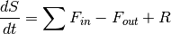
where 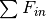 is the sum of inflows of water from
neighboring upstream grid cells (m3 s-1),
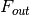 is the flux of water leaving the grid cell in the
downstream direction (m 3 s-1), and  is the total runoff generated by the land model grid cell
(m3 s-1). Downstream water flow direction in
each grid cell is determined as one of eight compass points (north,
northeast, east, southeast, south, southwest, west, and northwest) based
on the steepest downhill slope as determined from a digital elevation
model (Graham et al. 1999). The flux of water leaving the grid cell
is
is the total runoff generated by the land model grid cell
(m3 s-1). Downstream water flow direction in
each grid cell is determined as one of eight compass points (north,
northeast, east, southeast, south, southwest, west, and northwest) based
on the steepest downhill slope as determined from a digital elevation
model (Graham et al. 1999). The flux of water leaving the grid cell
is
(2)¶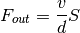
where  is the effective water flow velocity (m
s-1),
is the effective water flow velocity (m
s-1),  is the distance between centers of
neighboring grid cells (m), and is the volume of river water
stored within the grid cell (m3). The effective water flow
velocity can be estimated from Manning’s equation, which is a function
of surface water slope, the hydraulic radius of the river channel, and a
channel roughness coefficient (Dingman, 2002). However, hydraulic radius
and channel roughness data are not available globally, so a simplified
effective flow velocity expression is used in RTM
is the distance between centers of
neighboring grid cells (m), and is the volume of river water
stored within the grid cell (m3). The effective water flow
velocity can be estimated from Manning’s equation, which is a function
of surface water slope, the hydraulic radius of the river channel, and a
channel roughness coefficient (Dingman, 2002). However, hydraulic radius
and channel roughness data are not available globally, so a simplified
effective flow velocity expression is used in RTM
(3)¶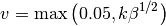
where  is the grid cell mean topographic slope, and
is the grid cell mean topographic slope, and
 .
.
The distance between two grid cell centers depends on river
direction, latitude, and longitude as
(4)¶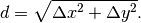
The distance in the zonal direction (m) is
(5)¶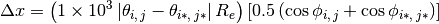
where 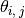 and 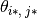 are the
latitudes (radians) of the upstream and downstream grid cells,
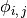 and 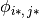 are the longitudes
(radians) of the upstream and downstream grid cells, 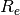 is
the radius of the earth (km) (Table 2.6), and  and
and  are grid cell indices. The distance in the meridional direction
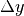 (m) is
are grid cell indices. The distance in the meridional direction
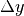 (m) is
(6)¶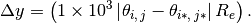
The RTM is generally run at a time step greater than that of the CLM because of computational constraints. The total runoff from the land model at each time step is accumulated until the RTM is invoked. The total liquid water runoff at the land model resolution (kg m-2 s-1) is
(7)¶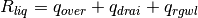
where  is surface runoff (section 7.3),
is surface runoff (section 7.3),
 is sub-surface drainage (section 7.6), and
is sub-surface drainage (section 7.6), and
 is liquid runoff from glaciers, wetlands, and lakes
(all in kg m-2 s-1) (sections 7.7 and
9.6.3). The total ice water runoff, also at the land model resolution is
is liquid runoff from glaciers, wetlands, and lakes
(all in kg m-2 s-1) (sections 7.7 and
9.6.3). The total ice water runoff, also at the land model resolution is
(8)¶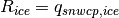
where  is the ice runoff from snow-capped
surfaces (section 7.7). The runoff at the land model resolution is
interpolated to the resolution of RTM and converted to units of
m3 s-1 for use in equation (11.1) by multiplying
by 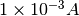 where
is the ice runoff from snow-capped
surfaces (section 7.7). The runoff at the land model resolution is
interpolated to the resolution of RTM and converted to units of
m3 s-1 for use in equation (11.1) by multiplying
by 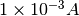 where  is the area
(m2) of the RTM grid cell.
is the area
(m2) of the RTM grid cell.
The RTM grid cells that are at river mouths, hence providing freshwater flux to the ocean, are identified by examining each RTM ocean grid cell and determining if a RTM land grid cell flows to that ocean grid cell. River mouth grid cells are also assigned if any overlapping grid cells at the land model resolution contain land. When used as part of the Community Climate System Model, the ocean freshwater liquid and ice fluxes at the RTM resolution are passed to the flux coupler which distributes the fluxes to the appropriate ocean grid cells. When used with the Community Atmosphere Model or when run offline, RTM serves only as a diagnostic tool. The river-routing scheme conserves water globally as
(9)¶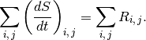